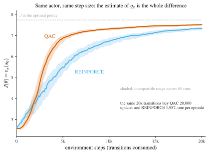

4 Policy Gradient and Actor-Critic Methods
\[ \newcommand{\E}{\mathbb{E}} \newcommand{\R}{\mathbb{R}} \newcommand{\Prob}{\mathbb{P}} \newcommand{\BR}{\operatorname{BR}} \newcommand{\eps}{\varepsilon} \newcommand{\given}{\,\vert\,} \newcommand{\argmax}{\operatorname*{arg\,max}} \newcommand{\argmin}{\operatorname*{arg\,min}} \newcommand{\sm}{\setminus} \newcommand{\defeq}{\equiv} \]
Every algorithm so far has parameterized a value and read a policy off it. Chapter 3 ended by replacing the table of values with a function \(\hat{v}(s,w)\) or \(\hat{q}(s,a,w)\), but the decision rule was still whatever \(\argmax_{a}\hat{q}(s,a,w)\) happened to be. This chapter parameterizes the policy itself, \(\pi(a\given s,\theta)\), and pushes \(\theta\) uphill on the value it delivers. That is a different kind of algorithm: the object being learned is the thing you act with, not an intermediate quantity you act on. It is also the family used to post-train large language models, which is the main reason it matters outside a lecture room.
Ben Moll’s RL lecture slides, Lecture 4.
4.1 From value-based to policy-based methods
Why the shift
Chapters 1 to 3 are all value-based. They estimate \(v_{\pi}\) or \(q_{\pi}\), and the policy is a by-product: greedy or \(\eps\)-greedy with respect to the estimate, as in Definition 2.2. Policy gradient methods are policy-based. They write down a family of policies indexed by \(\theta\), define a scalar measure of how good a policy is, and do gradient ascent on it. In the language of Chapter 1, this is a different way of doing step 2 of Howard policy iteration, the improvement step: instead of re-solving an \(\argmax\) from scratch each round, nudge the current policy in the direction that raises value. Step 1, policy evaluation, is still done by estimating an action-value function, so nothing from Chapters 2 and 3 is thrown away. It gets repurposed.
Policy gradient methods dominate practice, and most visibly in the post-training of large language models: reinforcement learning from human feedback (RLHF) and reinforcement learning with verifiable rewards (RLVR), the recipe behind reasoning models, are both policy gradient. The reason is structural. A language model is already a parameterized stochastic policy: given a context \(s\), it emits a distribution over next tokens \(a\). There is no table of \(q\)-values to take an \(\argmax\) over, and no sensible way to build one. What there is, is a differentiable \(\pi(a\given s,\theta)\) with billions of parameters and a reward signal at the end of a generated sequence. That is exactly the setting the theorems below are written for. The standard workhorse algorithm, proximal policy optimization (PPO), is a refinement of the plain gradient step derived in this chapter.
Policies as tables, policies as functions
Until now a policy has been a table. With nine states and five actions it is a \(9\times5\) grid whose \((s,a)\) cell holds \(\pi(a\given s)\), one number per state-action pair, read by lookup and written by assignment.
Replace it with a parameterized function
\[ \pi(a\given s,\theta),\qquad \theta\in\R^{m}, \tag{4.1}\]
where \(\theta\) might be the weights of a neural network whose input is \(s\) and whose outputs are the probabilities of each action. This is the same move Chapter 3 made for values in Equation 3.11, and it buys the same two things for the same two reasons:
- Storage. The table has \(|\mathcal{S}|\times|\mathcal{A}|\) entries. The function has \(m\) parameters, and \(m\) can be far smaller.
- Generalization. Changing one cell of a table changes the policy at one state. Changing \(\theta\) moves \(\pi\) at many states at once, so experience at \(s\) informs behaviour at states never visited.
The parallel with Equation 3.11 is exact, and it is worth being precise about what is not parallel. Equation 3.11 approximates a function, \(v_{\pi}\), that exists independently of the approximation: there is a true \(v_{\pi}\) and \(\hat{v}(s,w)\) is a fit to it. Equation 4.1 is not a fit to anything. There is no “true \(\pi\)” being approximated; the parameterized family simply is the set of policies under consideration, and the optimum is the best member of that family. Function approximation for values introduces approximation error. Policy parameterization introduces a restricted feasible set.
Notation varies: \(\pi(a\given s,\theta)\), \(\pi(a,s,\theta)\), and \(\pi_{\theta}(a\given s)\) all appear in the literature and all mean the same object. This chapter uses the first. For the deterministic case of the next section the policy returns an action rather than a distribution, and is written \(a=\pi(s,\theta)\).
4.2 Setting up the optimization
The goal is to choose \(\theta\) to maximize
\[ v_{\pi}(s)=\E_{0}\!\left[\sum_{t=0}^{\infty}\gamma^{t}r(s_{t},a_{t})\ \given\ s_{0}=s\right], \qquad s_{t+1}\sim p(\cdot\given s_{t},a_{t}),\ \ a_{t}\sim\pi(\cdot\given s_{t},\theta), \]
by some version of gradient ascent,
\[ \theta_{j+1}=\theta_{j}+\alpha\,\nabla_{\theta}J(\theta_{j}), \tag{4.2}\]
ascent rather than descent because the problem is a maximization. In practice the true gradient is unavailable and Equation 4.2 is run in its stochastic form, which is Equation 2.13 with the sign flipped: whenever the gradient can be written \(\nabla_{\theta}J(\theta)=\E[\text{something}(\theta)]\), a single sampled realization of that something is a legitimate step direction. That “whenever” is the entire technical content of this chapter.
Two problems stand between here and there.
Problem 1: \(v_{\pi}\) is not a scalar
\(v_{\pi}(s)\) is defined for every \(s\in\mathcal{S}\), so it is a vector of length \(|\mathcal{S}|\), or a function when the state space is continuous. Gradient ascent maximizes a number. There is nothing to ascend on until the vector is collapsed to a scalar.
The collapse is a weighted average across states:
\[ J(\theta)=\sum_{s\in\mathcal{S}}v_{\pi}(s)\,\mu(s), \tag{4.3}\]
where \(\mu\) is some distribution over starting states, for instance uniform. Read Equation 4.3 as expected value under a random initial state: \(J(\theta)=\E_{s_{0}\sim\mu}[v_{\pi}(s_{0})]\). The choice of \(\mu\) matters for which policy is optimal, since it says which states you care about doing well in, but it is exogenous and does not depend on \(\theta\), which is what makes it harmless to differentiate through.
Problem 2: the model reappears
With a scalar objective in hand, differentiate. Take the deterministic case \(a=\pi(s,\theta)\) for a moment, since it makes the difficulty most visible, and start from the Bellman equation for \(v_{\pi}\):
\[ v_{\pi}(s)=r\big(s,\pi(s,\theta)\big)+\gamma\sum_{s'\in\mathcal{S}}v_{\pi}(s')\,p\big(s'\given s,\pi(s,\theta)\big). \]
The parameter \(\theta\) enters through the action, and the action enters both the reward function and the transition density. So the chain rule produces
\[ \nabla_{\theta}v_{\pi}(s)=\Big(\underbrace{\nabla_{a}r(s,\pi)}_{\text{unknown}}+\gamma\sum_{s'\in\mathcal{S}}v_{\pi}(s')\underbrace{\nabla_{a}p(s'\given s,\pi)}_{\text{unknown}}\Big)\nabla_{\theta}\pi+\gamma\sum_{s'\in\mathcal{S}}\big(\nabla_{\theta}v_{\pi}(s')\big)\,p(s'\given s,\pi). \tag{4.4}\]
Both marked terms require the model: how the reward responds to a marginal change in the action, and how the transition density does. Neither is available in a model-free setting.
This is the same obstruction, in a new place. Chapter 2 met it in the policy improvement step, \(\argmax_{\pi}\{\mathbf{r}_{\pi}+\gamma\mathbf{P}_{\pi}\mathbf{v}\}\), which reads the model to turn a value into a decision, and solved it by working with action values instead: Equation 2.6 is an expectation, and expectations can be sampled. Here the same \((\mathbf{r},\mathbf{P})\) blocks the gradient rather than the maximization. The resolution is the same, and it is called the policy gradient theorem: rewrite \(\nabla_{\theta}J\) so that the model-dependent pieces are absorbed into \(q_{\pi}\), which can be estimated from samples.
Two versions follow. The deterministic one is more pedagogical and came later historically; the stochastic one is the version implemented in practice and is what people mean by “the policy gradient theorem”.
4.3 The deterministic policy gradient theorem
Theorem 4.1 (Deterministic policy gradient theorem) Let \(\mathcal{S}\) be finite, let \(\gamma\in(0,1)\), let the policy be deterministic, \(a=\pi(s,\theta)\) and differentiable in \(\theta\), and let \(J(\theta)=\sum_{s}v_{\pi}(s)\mu(s)\) as in Equation 4.3. Then
\[ \nabla_{\theta}J(\theta)=\E_{0}\!\left[\sum_{t=0}^{\infty}\gamma^{t}\,\nabla_{a}q_{\pi}(s_{t},a_{t})\,\nabla_{\theta}\pi(s_{t},\theta)\right], \tag{4.5}\]
where the expectation is over trajectories with \(s_{0}\sim\mu\), \(a_{t}=\pi(s_{t},\theta)\), and \(s_{t+1}\sim p(\cdot\given s_{t},a_{t})\).
Read the hypotheses back in words. The policy is a deterministic function of the state, so the action space must be continuous for \(\nabla_{a}\) to mean anything. The expectation is taken along trajectories generated by the policy being differentiated, so the theorem is a statement about on-policy data in the sense of Definition 3.3. And the model has vanished from the right-hand side entirely: the only unknowns are \(q_{\pi}\) and its derivative in the action, both properties of the value function rather than of the environment. The result is due to Silver et al. (2014).
Step 1: differentiate the Bellman equation. This is Equation 4.4, restated: \[ \nabla_{\theta}v_{\pi}(s)=\Big(\nabla_{a}r(s,\pi)+\gamma\sum_{s'\in\mathcal{S}}v_{\pi}(s')\nabla_{a}p(s'\given s,\pi)\Big)\nabla_{\theta}\pi+\gamma\sum_{s'\in\mathcal{S}}\big(\nabla_{\theta}v_{\pi}(s')\big)p(s'\given s,\pi). \] The first group collects the effect of \(\theta\) on today’s action; the second collects its effect on the continuation value, because \(v_{\pi}\) at every future state also depends on \(\theta\).
Step 2: recognize the bracket as \(\nabla_{a}q_{\pi}\). The action value under \(\pi\) is, by Equation 2.5, \[ q_{\pi}(s,a)=r(s,a)+\gamma\sum_{s'\in\mathcal{S}}v_{\pi}(s')\,p(s'\given s,a). \] Differentiate it with respect to \(a\), holding the continuation values \(v_{\pi}(s')\) fixed, which is legitimate because \(q_{\pi}(s,a)\) is by construction the value of deviating to \(a\) today only and following \(\pi\) from tomorrow on: \[ \nabla_{a}q_{\pi}(s,a)=\nabla_{a}r(s,a)+\gamma\sum_{s'\in\mathcal{S}}v_{\pi}(s')\,\nabla_{a}p(s'\given s,a). \] That is exactly the bracket in Step 1. Substituting, \[ \nabla_{\theta}v_{\pi}(s)=\nabla_{a}q_{\pi}\big(s,\pi(s,\theta)\big)\,\nabla_{\theta}\pi(s,\theta)+\gamma\sum_{s'\in\mathcal{S}}\big(\nabla_{\theta}v_{\pi}(s')\big)\,p\big(s'\given s,\pi(s,\theta)\big). \tag{4.6}\] The two unknown model derivatives have been packed into one object, \(\nabla_{a}q_{\pi}\), and both instances of the model that remain, \(p(s'\given s,\pi)\), sit where a Bellman equation always puts them.
Step 3: read Equation 4.6 as a Bellman equation. Define the unknown function \(x(s)\defeq\nabla_{\theta}v_{\pi}(s)\) and the “reward” \[ \rho(s)\defeq\nabla_{a}q_{\pi}\big(s,\pi(s,\theta)\big)\,\nabla_{\theta}\pi(s,\theta). \] Both are functions of the state alone, since \(\theta\) is fixed while we differentiate. Then Equation 4.6 reads \[ x(s)=\rho(s)+\gamma\sum_{s'\in\mathcal{S}}x(s')\,p_{\pi}(s'\given s), \] which is Equation 1.2, the Bellman equation of a Markov reward process in the sense of Definition 1.1, with reward \(\rho\) and transition kernel \(p_{\pi}\). Nothing about Definition 1.1 requires the reward to be a scalar: run the argument coordinate by coordinate on the \(m\) components of \(x\) and \(\rho\) and it goes through unchanged.
Step 4: solve it as a present discounted value. In matrix form, \(\mathbf{x}=\boldsymbol{\rho}+\gamma\mathbf{P}_{\pi}\mathbf{x}\). Since \(\mathbf{P}_{\pi}\) is row-stochastic its spectral radius is \(1\), so for \(\gamma\in(0,1)\) the matrix \(I-\gamma\mathbf{P}_{\pi}\) is invertible and the solution is unique: \[ \mathbf{x}=(I-\gamma\mathbf{P}_{\pi})^{-1}\boldsymbol{\rho}=\sum_{t=0}^{\infty}\gamma^{t}\mathbf{P}_{\pi}^{t}\boldsymbol{\rho}, \] the Neumann series converging because \(\|\gamma\mathbf{P}_{\pi}\|<1\). Row \(s\) of \(\mathbf{P}_{\pi}^{t}\boldsymbol{\rho}\) is \(\E[\rho(s_{t})\given s_{0}=s]\), so component-wise this says \[ \nabla_{\theta}v_{\pi}(s_{0})=\E_{0}\!\left[\sum_{t=0}^{\infty}\gamma^{t}\,\nabla_{a}q_{\pi}(s_{t},a_{t})\,\nabla_{\theta}\pi(s_{t},\theta)\right], \qquad a_{t}=\pi(s_{t},\theta),\ \ s_{t+1}\sim p(\cdot\given s_{t},a_{t}). \]
Step 5: average over starting states. By Equation 4.3, \(\nabla_{\theta}J(\theta)=\sum_{s}\mu(s)\nabla_{\theta}v_{\pi}(s)\), since \(\mu\) does not depend on \(\theta\). Drawing \(s_{0}\sim\mu\) instead of fixing it gives Equation 4.5. \(\square\)
Three moves, and only the middle one is specific to this problem. Differentiate the Bellman equation. Notice that the awkward terms are precisely the derivative of \(q_{\pi}\) in the action. Then observe that what is left is itself a Bellman equation, in the new unknown \(\nabla_{\theta}v_{\pi}\), and therefore has the standard present-discounted-value solution.
The last step is where the model-free property is won. The gradient of the value at \(s_{0}\) is a discounted sum of local quantities along a trajectory, and a trajectory is something you can sample. You do not need \(p\) to compute the sum; you need \(p\) only to generate the states, which the environment does for free.
Turning Equation 4.5 into an algorithm is mechanical. It has the form \(\nabla_{\theta}J(\theta)=\E[\text{something}(\theta)]\), so replacing the expectation by one sampled trajectory of length \(T\) gives the stochastic gradient ascent step
\[ \theta_{j+1}=\theta_{j}+\alpha\sum_{t=0}^{T}\gamma^{t}\,\nabla_{a}q_{\pi}(s_{t},a_{t})\,\nabla_{\theta}\pi(s_{t},\theta_{j}). \]
Which leaves one thing outstanding: an estimate of \(q_{\pi}\), and of its derivative \(\nabla_{a}q_{\pi}\). Hold that thought.
4.4 The stochastic policy gradient theorem
Now let the policy be stochastic, \(a_{t}\sim\pi(\cdot\given s_{t},\theta)\).
Theorem 4.2 (Stochastic policy gradient theorem) Let \(\mathcal{S}\) and \(\mathcal{A}\) be finite, let \(\gamma\in(0,1)\), let \(\pi(a\given s,\theta)>0\) be differentiable in \(\theta\) for all \((s,a)\), and let \(J(\theta)=\sum_{s}v_{\pi}(s)\mu(s)\) as in Equation 4.3. Then
\[ \nabla_{\theta}J(\theta)=\E_{0}\!\left[\sum_{t=0}^{\infty}\gamma^{t}\,q_{\pi}(s_{t},a_{t})\,\nabla_{\theta}\ln\pi(a_{t}\given s_{t},\theta)\right], \tag{4.7}\]
where the expectation is over trajectories with \(s_{0}\sim\mu\), \(a_{t}\sim\pi(\cdot\given s_{t},\theta)\), and \(s_{t+1}\sim p(\cdot\given s_{t},a_{t})\).
Compare the hypotheses with Theorem 4.1. Positivity of \(\pi\) is new and is needed for \(\ln\pi\) to be defined; differentiability in \(\theta\) replaces differentiability in \(a\), so the action space may now be finite. Compare the conclusions: \(\nabla_{a}q_{\pi}\) has become plain \(q_{\pi}\), and \(\nabla_{\theta}\pi\) has become \(\nabla_{\theta}\ln\pi\). Both changes come from a single algebraic step in the proof.
Step 1: differentiate the Bellman equation. For a fixed stochastic policy \(\pi\), Equation 2.1 without the maximization reads \[ v_{\pi}(s)=\sum_{a\in\mathcal{A}}\pi(a\given s,\theta)\left(r(s,a)+\gamma\sum_{s'\in\mathcal{S}}v_{\pi}(s')\,p(s'\given s,a)\right). \] Differentiate with respect to \(\theta\) by the product rule. Note what has changed relative to the deterministic case: \(\theta\) now enters only through \(\pi\), because \(r(s,a)\) and \(p(s'\given s,a)\) are evaluated at fixed actions \(a\) that are summed over, not at a \(\theta\)-dependent action. So no \(\nabla_{a}r\) or \(\nabla_{a}p\) can arise: \[ \nabla_{\theta}v_{\pi}(s)=\sum_{a\in\mathcal{A}}\nabla_{\theta}\pi(a\given s,\theta)\left(r(s,a)+\gamma\sum_{s'}v_{\pi}(s')p(s'\given s,a)\right)+\sum_{a\in\mathcal{A}}\pi(a\given s,\theta)\,\gamma\sum_{s'}\big(\nabla_{\theta}v_{\pi}(s')\big)p(s'\given s,a). \]
Step 2: name the bracket. By Equation 2.5 the bracket is \(q_{\pi}(s,a)\), so \[ \nabla_{\theta}v_{\pi}(s)=\sum_{a\in\mathcal{A}}\nabla_{\theta}\pi(a\given s,\theta)\,q_{\pi}(s,a)+\gamma\sum_{a\in\mathcal{A}}\pi(a\given s,\theta)\sum_{s'\in\mathcal{S}}\big(\nabla_{\theta}v_{\pi}(s')\big)p(s'\given s,a). \] The second term is already in Bellman form: it averages \(\nabla_{\theta}v_{\pi}(s')\) against \(\pi\) and then against \(p\), which is exactly the policy-averaged transition \(p_{\pi}\) of Definition 2.1. The first term is not, because its weights are \(\nabla_{\theta}\pi(a\given s,\theta)\) rather than \(\pi(a\given s,\theta)\).
Step 3: the log trick. Multiply and divide by \(\pi\), which is legitimate because \(\pi>0\): \[ \nabla_{\theta}\pi(a\given s,\theta)=\pi(a\given s,\theta)\,\frac{\nabla_{\theta}\pi(a\given s,\theta)}{\pi(a\given s,\theta)}=\pi(a\given s,\theta)\,\nabla_{\theta}\ln\pi(a\given s,\theta), \tag{4.8}\] the second equality being the chain rule for \(\ln\). Substituting, both terms now carry the same weights \(\pi(a\given s,\theta)\) and can be collected: \[ \nabla_{\theta}v_{\pi}(s)=\sum_{a\in\mathcal{A}}\pi(a\given s,\theta)\left(\nabla_{\theta}\ln\pi(a\given s,\theta)\,q_{\pi}(s,a)+\gamma\sum_{s'\in\mathcal{S}}\big(\nabla_{\theta}v_{\pi}(s')\big)p(s'\given s,a)\right). \tag{4.9}\]
Step 4: read it as a Bellman equation and solve. Equation 4.9 has exactly the shape of the stochastic-policy Bellman equation, with unknown \(x(s)=\nabla_{\theta}v_{\pi}(s)\) and state-action reward \[ \rho(s,a)\defeq q_{\pi}(s,a)\,\nabla_{\theta}\ln\pi(a\given s,\theta). \] As in Step 4 of the deterministic proof, \(I-\gamma\mathbf{P}_{\pi}\) is invertible for \(\gamma\in(0,1)\) because \(\mathbf{P}_{\pi}\) is row-stochastic, so the fixed point is unique and equals its present discounted value: \[ \nabla_{\theta}v_{\pi}(s_{0})=\E_{0}\!\left[\sum_{t=0}^{\infty}\gamma^{t}\,q_{\pi}(s_{t},a_{t})\,\nabla_{\theta}\ln\pi(a_{t}\given s_{t},\theta)\right],\qquad a_{t}\sim\pi(\cdot\given s_{t},\theta). \]
Step 5: average over starting states. Drawing \(s_{0}\sim\mu\) in Equation 4.3 gives Equation 4.7. \(\square\)
Why the log trick is the whole point
Equation 4.8 looks like a triviality. It is the step that makes the theorem usable, and the reason is worth spelling out.
Before the trick, the first term of Step 2 is \(\sum_{a}\nabla_{\theta}\pi(a\given s,\theta)\,q_{\pi}(s,a)\): a weighted sum whose weights are gradient components. Those weights are not probabilities. They can be negative, and in fact they sum to zero, since differentiating \(\sum_{a}\pi(a\given s,\theta)=1\) gives \(\sum_{a}\nabla_{\theta}\pi(a\given s,\theta)=0\). There is no distribution you could draw an action from to make that sum an average, so there is no Monte-Carlo estimator for it.
After the trick, the weights are \(\pi(a\given s,\theta)\): the distribution the agent is already sampling from every time it acts. The sum becomes a genuine expectation, and the whole right-hand side of Equation 4.7 becomes an expectation over trajectories the agent generates in the ordinary course of running. Chapter 1’s founding observation then applies verbatim: an expectation you cannot integrate is an expectation you can average.
Put differently, the log trick moves the derivative off the measure and onto the integrand. The quantity \(\nabla_{\theta}\ln\pi(a\given s,\theta)\), the score, is just another function of \((s,a)\) that you evaluate at the sampled pair, and \(\pi\) is left where it belongs, as the thing generating the sample. This is why the same device shows up under different names across statistics: it is the score-function identity behind maximum likelihood, and the likelihood-ratio estimator in simulation.
The one price is the hypothesis \(\pi>0\). A parameterization that could assign probability zero to an action would make \(\ln\pi\) undefined exactly where it is needed. The standard fix builds positivity into the functional form.
Example 4.1 (Softmax parameterization) Let \(h(s,a,\theta)\) be an arbitrary differentiable preference function, for example the output of a neural network, and set \[ \pi(a\given s,\theta)=\frac{e^{h(s,a,\theta)}}{\sum_{a'\in\mathcal{A}}e^{h(s,a',\theta)}}. \tag{4.10}\] Because the exponential is strictly positive, \(\pi(a\given s,\theta)\in(0,1)\) for every \((s,a)\) and \(\sum_{a}\pi(a\given s,\theta)=1\) automatically. The score has a clean form: \[ \nabla_{\theta}\ln\pi(a\given s,\theta)=\nabla_{\theta}h(s,a,\theta)-\sum_{a'\in\mathcal{A}}\pi(a'\given s,\theta)\,\nabla_{\theta}h(s,a',\theta), \] the gradient of the chosen action’s preference minus its average across actions. Raising \(\theta\) along this direction raises \(h\) for the action taken relative to the others, which is what “make good actions more likely” means concretely. In a network implementation this is simply a softmax output layer.
Softmax settles the exploration problem without any of Chapter 2’s machinery. Definition 2.2 kept every action alive by mixing a greedy policy with a uniform one, an external patch on a policy that would otherwise be degenerate. Under Equation 4.10 every action has strictly positive probability by construction, at every state, for every \(\theta\). Exploration is a property of the parameterization rather than something bolted on afterwards, and it anneals on its own: as the preferences separate, the policy becomes nearly deterministic where it is confident and stays diffuse where it is not.
Comparing the two theorems
| Deterministic, Theorem 4.1 | Stochastic, Theorem 4.2 | |
|---|---|---|
| Policy | \(a=\pi(s,\theta)\), an action | \(a\sim\pi(\cdot\given s,\theta)\), a distribution |
| Gradient | \(\E_{0}\big[\sum_{t}\gamma^{t}\nabla_{a}q_{\pi}(s_{t},a_{t})\nabla_{\theta}\pi(s_{t},\theta)\big]\) | \(\E_{0}\big[\sum_{t}\gamma^{t}q_{\pi}(s_{t},a_{t})\nabla_{\theta}\ln\pi(a_{t}\given s_{t},\theta)\big]\) |
| Needs estimated | \(q_{\pi}\) and its action-derivative \(\nabla_{a}q_{\pi}\) | \(q_{\pi}\) only, at visited pairs |
| Action space | continuous, or \(\nabla_{a}\) is meaningless | finite or continuous |
| Exploration | none: the policy is a point | built in, if \(\pi>0\) as in Equation 4.10 |
| Where the \(\theta\)-derivative sits | on the action, hence on \(r\) and \(p\) | on \(\pi\) alone, hence never on the model |
The decisive row is the third. Estimating \(q_{\pi}(s,a)\) from samples is the problem Chapters 2 and 3 solved three separate ways: Monte-Carlo returns Equation 2.6, Sarsa Equation 3.7, Sarsa with function approximation Equation 3.14. Estimating \(\nabla_{a}q_{\pi}(s,a)\) is strictly harder, and not by a constant factor. A derivative is a difference of nearby values divided by a small number, so any noise in the estimate of \(q_{\pi}\) is amplified; and to know how \(q_{\pi}\) moves in \(a\) you need data at neighbouring actions, which a deterministic policy never generates, since it always plays the same action at a given state. The deterministic version therefore has to import an exploration scheme from outside and a differentiable critic in the action, which is what Deep Deterministic Policy Gradient does.
The stochastic version asks only for \(q_{\pi}(s_{t},a_{t})\) at the state-action pairs actually visited, and generates its own spread of actions for free. That is why Equation 4.7, not Equation 4.5, is what “the policy gradient theorem” refers to, and what everything below builds on.
4.5 REINFORCE
Equation 4.7 is a statement of the form \(\nabla_{\theta}J(\theta)=\E[\text{something}(\theta)]\), so Equation 4.2 in its stochastic form says: sample one trajectory, evaluate the something, step. Truncating at horizon \(T\),
\[ \theta_{j+1}=\theta_{j}+\alpha\sum_{t=0}^{T}\gamma^{t}\,q_{\pi}(s_{t},a_{t})\,\nabla_{\theta}\ln\pi(a_{t}\given s_{t},\theta_{j}). \]
The score \(\nabla_{\theta}\ln\pi(a_{t}\given s_{t},\theta_{j})\) is computable: it is a derivative of a function we chose. The action value \(q_{\pi}(s_{t},a_{t})\) is not. Everything in the rest of this chapter is a choice of what to substitute for it, and the two choices available are the two of Table 3.1.
The first choice is Monte Carlo. By Equation 2.6, \(q_{\pi}(s,a)\) is the expected discounted return from \((s,a)\), so the realized return along the sampled trajectory is an unbiased estimate of it:
\[ G_{t}\defeq\sum_{k=t}^{T}\gamma^{k-t}r_{k+1}. \]
Substituting gives the algorithm.
Initialize \(\theta_{0}\), a step size \(\alpha>0\), and a discount \(\gamma\in(0,1)\). For each episode \(j=0,1,2,\dots\)
- Generate a full episode \(s_{0},a_{0},r_{1},\dots,s_{T},a_{T},r_{T+1}\) by following \(\pi(\cdot\given\cdot,\theta_{j})\), indexing rewards as in Chapter 3 so that \(r_{t+1}\) is the reward for acting at \(t\).
- Compute the returns \(G_{t}=\sum_{k=t}^{T}\gamma^{k-t}r_{k+1}\) for \(t=0,\dots,T\).
- Update the policy parameter once: \[ \theta_{j+1}=\theta_{j}+\alpha\sum_{t=0}^{T}\gamma^{t}\,G_{t}\,\nabla_{\theta}\ln\pi(a_{t}\given s_{t},\theta_{j}). \tag{4.11}\]
REINFORCE is episodic in the exact sense of Definition 3.1: \(G_{0}\) cannot be formed until the reward at \(T\) has been observed, so \(\theta\) cannot move until the episode is over. That is the same limitation MC Basic had in Chapter 2, arriving now in parameter space rather than in a table.
Write a single term of Equation 4.11 using Equation 4.8 in reverse: \[ \alpha\gamma^{t}G_{t}\nabla_{\theta}\ln\pi(a_{t}\given s_{t},\theta_{j})=\alpha\gamma^{t}\underbrace{\frac{G_{t}}{\pi(a_{t}\given s_{t},\theta_{j})}}_{\text{weight}}\nabla_{\theta}\pi(a_{t}\given s_{t},\theta_{j}), \] which is a gradient-ascent step on the probability \(\pi(a_{t}\given s_{t},\theta)\) itself, with the weight in front. Two readings follow, and together they are the whole intuition for policy gradient.
The weight is proportional to \(G_{t}\): actions that turned out well get their probability pushed up, actions that turned out badly get it pushed down, in proportion to how well. That is exploitation.
The weight is inversely proportional to \(\pi(a_{t}\given s_{t},\theta_{j})\): among two actions with the same return, the one that was unlikely to have been tried gets the larger boost. That is exploration, and it falls out of the log rather than being imposed.
A clarification about the pseudocode
Standard presentations of REINFORCE, in Zhao, in Sutton and Barto, and in Murphy, write the update as a loop over \(t\) inside each episode, which makes it look as though \(\theta\) is being updated at every time step. It is not. Equation 4.11 is one update per episode, and the inner loop is only an efficient way of accumulating its sum.
Write \(\theta_{j}^{t}\) for the running value of the accumulator inside episode \(j\), initialized at \(\theta_{j}^{0}=\theta_{j}\). The inner loop performs \[ \theta_{j}^{t+1}=\theta_{j}^{t}+\alpha\gamma^{t}G_{t}\nabla_{\theta}\ln\pi(a_{t}\given s_{t},\theta_{j}),\qquad t=0,\dots,T. \] The point is the argument of the score: it is \(\theta_{j}\), the parameter that generated the episode, held fixed throughout the loop, and never \(\theta_{j}^{t}\). So every increment is a fixed vector, and unrolling the recursion is just addition: \[ \theta_{j}^{T+1}=\theta_{j}^{0}+\alpha\sum_{t=0}^{T}\gamma^{t}G_{t}\nabla_{\theta}\ln\pi(a_{t}\given s_{t},\theta_{j})=\theta_{j+1}, \] which is Equation 4.11. One episode in, one parameter update out.
Some implementations genuinely do refresh \(\theta\) inside the loop, evaluating the score at the current running value rather than at \(\theta_{j}\). This is done for sample efficiency, since it extracts several updates from one episode, but it is no longer Equation 4.11: the scores are then evaluated at parameters that have drifted away from the policy which generated the data, so the estimator is biased. Worth knowing which one you are reading.
4.6 The discounted state visitation distribution
Equation 4.7 is an expectation over whole trajectories, with a \(\gamma^{t}\) weight riding on each term. There is an equivalent form that is an expectation over a single state-action pair, and it is the form that licenses incremental algorithms. Getting to it requires one new object.
Definition 4.1 (Discounted state visitation distribution) For a policy \(\pi\) and an initial distribution \(\mu\), define \[ d_{\pi,\mu}(s)\defeq(1-\gamma)\sum_{t=0}^{\infty}\gamma^{t}\,\Prob\big(s_{t}=s\ \given\ s_{0}\sim\mu,\ \pi\big). \tag{4.12}\]
Read Equation 4.12 as: how often the policy is at \(s\), counting a visit at time \(t\) as worth \(\gamma^{t}\), normalized so the weights sum to one. It answers “where does this policy spend its discounted time”, starting from \(\mu\). The factor \((1-\gamma)\) is exactly the normalization that makes it a probability distribution, which is the first thing to verify.
Non-negativity is immediate: every term in Equation 4.12 is a probability times a non-negative weight. It remains to show the entries sum to one, and the cleanest way is the matrix-vector notation of Chapter 1.
Let \(\mathbf{P}_{\pi}\) be the \(n\times n\) policy-averaged transition matrix built from Definition 2.1, with \((\mathbf{P}_{\pi})_{ij}=p_{\pi}(s_{j}\given s_{i})\), and let \(\boldsymbol{\mu}\) be the column vector of initial probabilities. If \(\boldsymbol{\mu}_{t}\) denotes the distribution of \(s_{t}\) as a column vector, then \[ \boldsymbol{\mu}_{t+1}(j)=\sum_{i}\boldsymbol{\mu}_{t}(i)\,(\mathbf{P}_{\pi})_{ij} \qquad\Longleftrightarrow\qquad \boldsymbol{\mu}_{t+1}=\mathbf{P}_{\pi}^{\!\top}\boldsymbol{\mu}_{t}, \] so \(\boldsymbol{\mu}_{t}=(\mathbf{P}_{\pi}^{\!\top})^{t}\boldsymbol{\mu}\) and Equation 4.12 is \[ \mathbf{d}_{\pi,\mu}=(1-\gamma)\sum_{t=0}^{\infty}\gamma^{t}\big(\mathbf{P}_{\pi}^{\!\top}\big)^{t}\boldsymbol{\mu}. \] Now sum the entries by taking the inner product with the vector of ones \(\mathbf{1}\): \[ \mathbf{d}_{\pi,\mu}^{\!\top}\mathbf{1}=(1-\gamma)\sum_{t=0}^{\infty}\gamma^{t}\,\boldsymbol{\mu}^{\!\top}\mathbf{P}_{\pi}^{t}\,\mathbf{1}. \] Two facts finish it. First, \(\mathbf{P}_{\pi}\) is row-stochastic, meaning each row is a probability distribution over next states, so \(\mathbf{P}_{\pi}\mathbf{1}=\mathbf{1}\); by induction \(\mathbf{P}_{\pi}^{t}\mathbf{1}=\mathbf{1}\) for every \(t\). Second, \(\boldsymbol{\mu}\) is a distribution, so \(\boldsymbol{\mu}^{\!\top}\mathbf{1}=1\). Hence every term of the sum collapses to \(\gamma^{t}\), and \[ \mathbf{d}_{\pi,\mu}^{\!\top}\mathbf{1}=(1-\gamma)\sum_{t=0}^{\infty}\gamma^{t}=(1-\gamma)\cdot\frac{1}{1-\gamma}=1. \qquad\square \]
The geometric series is the whole reason \((1-\gamma)\) appears in Equation 4.12. The unnormalized discounted visit counts \(\sum_{t}\gamma^{t}\Prob(s_{t}=s)\) sum to \(1/(1-\gamma)\), the expected discounted horizon length, so dividing by that number, equivalently multiplying by \((1-\gamma)\), is what turns a set of occupancy weights into a distribution. This is also where the \(1/(1-\gamma)\) in Equation 4.13 below comes from: it is the same constant, moved to the other side.
The simple expectation form
Start from the present-discounted-value form Equation 4.7 and exchange the sum and the expectation, which is legitimate by dominated convergence when rewards are bounded and \(\gamma<1\): \[ \nabla_{\theta}J(\theta)=\sum_{t=0}^{\infty}\gamma^{t}\,\E\big[q_{\pi}(s_{t},a_{t})\,\nabla_{\theta}\ln\pi(a_{t}\given s_{t},\theta)\big]. \]
Now write out the time-\(t\) expectation by conditioning first on the state and then on the action. Given \(s_{t}=s\), the action is drawn from \(\pi(\cdot\given s,\theta)\) regardless of \(t\), so \[ \E\big[q_{\pi}(s_{t},a_{t})\nabla_{\theta}\ln\pi(a_{t}\given s_{t},\theta)\big] =\sum_{s\in\mathcal{S}}\Prob(s_{t}=s)\underbrace{\sum_{a\in\mathcal{A}}\pi(a\given s,\theta)\,q_{\pi}(s,a)\,\nabla_{\theta}\ln\pi(a\given s,\theta)}_{\defeq\ g(s)}, \] where \(\Prob(s_{t}=s)\) abbreviates \(\Prob(s_{t}=s\given s_{0}\sim\mu,\pi)\). The crucial observation is that \(g(s)\) does not depend on \(t\): it is a property of the state and the fixed policy only. So \(t\) appears nowhere except in \(\gamma^{t}\) and in \(\Prob(s_{t}=s)\), and the sum over \(t\) can be pushed inside the sum over \(s\): \[ \nabla_{\theta}J(\theta)=\sum_{s\in\mathcal{S}}\underbrace{\left[\sum_{t=0}^{\infty}\gamma^{t}\Prob(s_{t}=s)\right]}_{=\ d_{\pi,\mu}(s)/(1-\gamma)}g(s) =\frac{1}{1-\gamma}\sum_{s\in\mathcal{S}}d_{\pi,\mu}(s)\,g(s), \] the identification of the bracket being Equation 4.12 divided by \((1-\gamma)\). Finally, \(\sum_{s}d_{\pi,\mu}(s)(\cdot)\) is an expectation because Definition 4.1 is a distribution, and \(g(s)\) is itself an expectation over \(a\sim\pi(\cdot\given s,\theta)\). Composing the two gives Equation 4.13. \(\square\)
\[ \nabla_{\theta}J(\theta)=\frac{1}{1-\gamma}\,\E_{s\sim d_{\pi,\mu},\ a\sim\pi(\cdot\given s,\theta)}\big[\,q_{\pi}(s,a)\,\nabla_{\theta}\ln\pi(a\given s,\theta)\,\big]. \tag{4.13}\]
Equation 4.7 and Equation 4.13 are the same number written two ways, and the difference between them is where the discounting lives. In Equation 4.7 it is in the summand, as an explicit \(\gamma^{t}\) attached to each term of a trajectory. In Equation 4.13 it has migrated into the sampling distribution: all the \(\gamma^{t}\) weighting is now inside \(d_{\pi,\mu}\), and what is left outside is a single expectation over one state-action pair.
That is what makes incremental algorithms possible. Estimating Equation 4.7 needs a whole trajectory, because the summand is indexed by \(t\). Estimating Equation 4.13 needs one draw of \((s,a)\), so a single transition already supports a gradient step. REINFORCE is episodic because it targets the first form; actor-critic is incremental because it targets the second.
The constant \(1/(1-\gamma)\) is never computed. It scales the gradient uniformly, so it is absorbed into the step size \(\alpha\) and disappears. And drawing \(s\) exactly from \(d_{\pi,\mu}\) would require restarting from \(\mu\) and stopping with probability \(1-\gamma\) at each step; implementations instead just use the states encountered along an ongoing trajectory. Both are departures from the theorem as stated, both are standard, and neither is usually flagged.
4.7 Actor-critic methods
What actor and critic mean
Definition 4.2 (Actor and critic) In a policy gradient algorithm, the actor is the policy update, the step that moves \(\theta\) and hence changes what the agent does. The critic is the value estimation that supplies \(q_{\pi}\) to the actor, the step that scores the current policy without changing it.
The names are literal. The actor acts; the critic criticizes, by evaluating what the actor did. Note that this is not a new class of algorithm: actor-critic methods are policy gradient methods, and the terminology names a structure rather than a mechanism. What it emphasizes is that policy-based and value-based learning are running side by side in the same loop, with the value-based part of Chapters 2 and 3 supplying exactly the one quantity Equation 4.13 leaves open.
Which critic
Take the stochastic gradient ascent step implied by Equation 4.13: draw one pair \((s_{t},a_{t})\), absorb the constant into \(\alpha\), and step.
\[ \theta_{t+1}=\theta_{t}+\alpha\,q_{\pi}(s_{t},a_{t})\,\nabla_{\theta}\ln\pi(a_{t}\given s_{t},\theta_{t}). \tag{4.14}\]
Equation 4.14 is the actor, and it is complete except for \(q_{\pi}(s_{t},a_{t})\). There are exactly two ways to get that, and they are the two ways this book has been comparing since Table 1.1:
- Monte Carlo, substituting the realized return \(G_{t}\). That is REINFORCE, Equation 4.11, and it is episodic.
- Temporal difference, substituting a bootstrapped estimate maintained by its own recursion. That is actor-critic, and it is incremental.
The step from one to the other is the step from Chapter 2 to Chapter 3, taken a second time, one level up.
The QAC algorithm
The simplest instance keeps a parametric action-value function \(\hat{q}(s,a,w)\) and trains it by Sarsa with function approximation. It is usually called Q actor-critic.
Initialize policy parameters \(\theta_{0}\), critic parameters \(w_{0}\), and step sizes \(\alpha_{\theta},\alpha_{w}>0\). At each time step \(t\) of each episode:
Interact. Take \(a_{t}\sim\pi(\cdot\given s_{t},\theta_{t})\), observe \(r_{t+1}\) and \(s_{t+1}\), and draw \(a_{t+1}\sim\pi(\cdot\given s_{t+1},\theta_{t})\).
Critic (value update). \[ w_{t+1}=w_{t}+\alpha_{w}\big[\,r_{t+1}+\gamma\hat{q}(s_{t+1},a_{t+1},w_{t})-\hat{q}(s_{t},a_{t},w_{t})\,\big]\nabla_{w}\hat{q}(s_{t},a_{t},w_{t}). \tag{4.15}\]
Actor (policy update). \[ \theta_{t+1}=\theta_{t}+\alpha_{\theta}\,\hat{q}(s_{t},a_{t},w_{t})\,\nabla_{\theta}\ln\pi(a_{t}\given s_{t},\theta_{t}). \tag{4.16}\]
Two observations make the algorithm intelligible.
The critic is not new. Equation 4.15 is Equation 3.14, character for character: Sarsa with function approximation, the last algorithm of Chapter 3. Its bracket is the TD error of Definition 3.2 in action-value form, and it is multiplied by \(\nabla_{w}\hat{q}\) because the update lands on parameters rather than on a table cell. Nothing about it knows it is serving a policy gradient method.
The actor is Equation 4.14 with the estimate plugged in. The only difference from Equation 4.14 is that the unavailable \(q_{\pi}(s_{t},a_{t})\) has been replaced by the critic’s current guess \(\hat{q}(s_{t},a_{t},w_{t})\).
The critic answers “how good was that?” and the actor answers “then do more of it”. Each supplies the other with what it cannot compute: the actor cannot evaluate its own choices, and the critic has no way to change behaviour. Running them at the same time is what makes the method incremental, since neither has to wait for the other to converge before taking its next step.

| REINFORCE, Equation 4.11 | QAC, Equation 4.16 and Equation 4.15 | |
|---|---|---|
| Estimate of \(q_{\pi}\) | realized return \(G_{t}\), as in Equation 2.6 | bootstrapped \(\hat{q}(s,a,w)\), as in Equation 3.14 |
| Timing | episodic, in the sense of Definition 3.1 | incremental: one update per transition |
| Bias | unbiased | biased while \(\hat{q}\neq q_{\pi}\) |
| Variance | high: \(G_{t}\) sums many random rewards | low: one reward plus a bootstrap |
| What is stored | policy parameters \(\theta\) | \(\theta\) and critic parameters \(w\) |
| Task type | needs terminal states | handles continuing tasks too |
Policy gradient methods are on-policy in the sense of Definition 3.3, and Equation 4.13 says why. The expectation is taken over \(a\sim\pi(\cdot\given s,\theta)\), the policy currently being learned, so a sample drawn from any other policy estimates the wrong expectation. This is a stronger constraint than Sarsa’s: Sarsa was on-policy because its target happened to need \(a_{t+1}\), whereas here the sampling distribution is written into the theorem itself. Undoing it requires an importance-weighting correction, and that correction, kept from growing too large, is the idea behind PPO.
Look at what is missing from QAC relative to policy searching by Sarsa in Chapter 3: there is no improvement step and no \(\eps\)-greedy step. The policy is not derived from \(\hat{q}\) by maximizing over actions; it is its own parameterized object, moved directly by Equation 4.16. And exploration is guaranteed by Equation 4.10 keeping \(\pi>0\) rather than by mixing in a uniform distribution. The two pieces of scaffolding that Chapter 2 needed to make value-based methods work have both become unnecessary, because the thing they were propping up is no longer how the policy is produced.
4.8 Closing: what the four chapters did
The book has a single spine, and it is worth stating in one place. Every chapter took one more object that dynamic programming computes exactly and replaced it with a sampled estimate.
Chapter 1 set up the ledger. Dynamic programming computes \(\E[\cdot]\) by integrating against a known \(p\); Monte Carlo estimates it by averaging draws. Equation 1.1 showed that the average can be built incrementally, one sample at a time, and that swapping \(1/k\) for a constant \(\alpha\) turns averaging into learning. The doorway at the end of that chapter was Howard policy iteration with its evaluation step marked for replacement.
Chapter 2 replaced the evaluation step. The exact linear solve Equation 1.6 became an average of sampled returns Equation 2.7, and improvement was made model-free by working with \(q_{\pi}\) rather than \(v_{\pi}\). The theory of why such replacements converge, Robbins-Monro and stochastic approximation, was built there, and Equation 2.13 came out of it as the general engine.
Chapter 3 replaced two more things. The wait for an episode to end became a bootstrap, giving TD, Sarsa, and Q-learning; and the table of values became a parameterized function Equation 3.11 fit by Equation 2.13. After that chapter, what an algorithm stores and what an algorithm waits for had both been made cheap.
Chapter 4 replaced the last one. Even with \(\hat{q}(s,a,w)\) in hand, the policy was still produced by an exactly computed \(\argmax\) over actions. Policy gradient parameterizes the policy directly and replaces that maximization with a sampled gradient step, Equation 4.13, whose ingredients are a score you can differentiate and a \(q\) you already know three ways to estimate. Nothing in the loop is computed from a model any more.
Which is the sentence Chapter 1 opened with, now earned rather than asserted: reinforcement learning is Monte-Carlo dynamic programming.